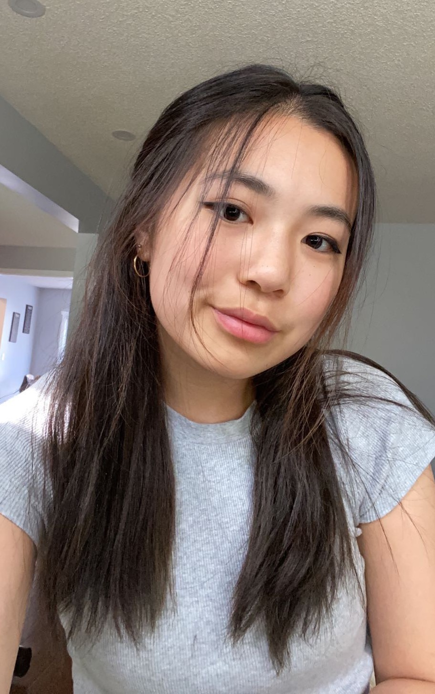

Hi! I'm Judy ~~
welcome to my corner(s) of internet!
I’m a Computer Science student at the University of Waterloo. My combined passions for design, software development, human computer interaction brought me here, in a position where I seek to create memorable user experiences and solutions.
When not battling school deadlines and debugging code, I like to hot girl sweat, indulge in true crime and plot my way to world domination.
I’m a Computer Science student at the University of Waterloo. My combined passions for design, software development, human computer interaction brought me here, in a position where I seek to create memorable user experiences and solutions.
When not battling school deadlines and debugging code, I like to hot girl sweat, indulge in true crime and plot my way to world domination.
I make vidoes sometimes.
- Item 1
- Item 2
- Item 3